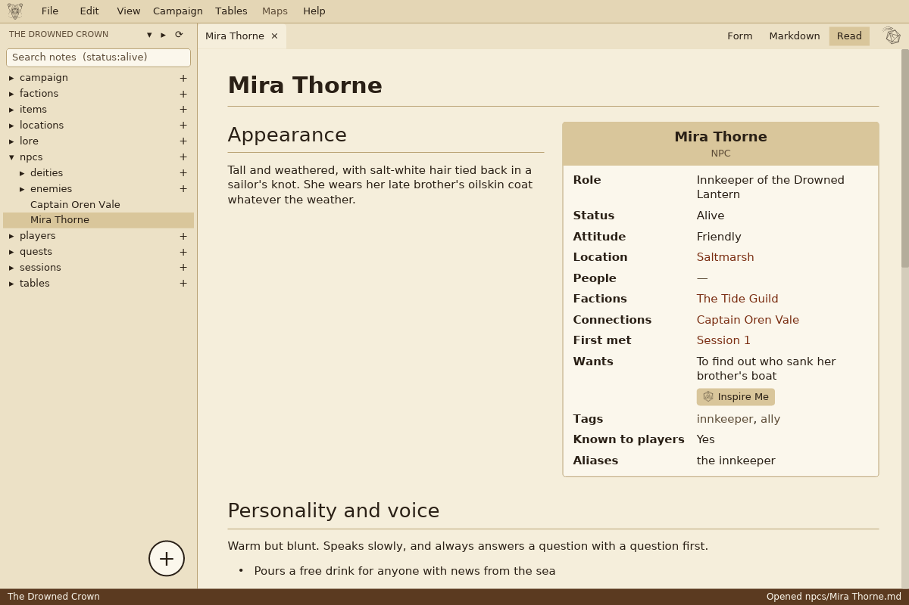
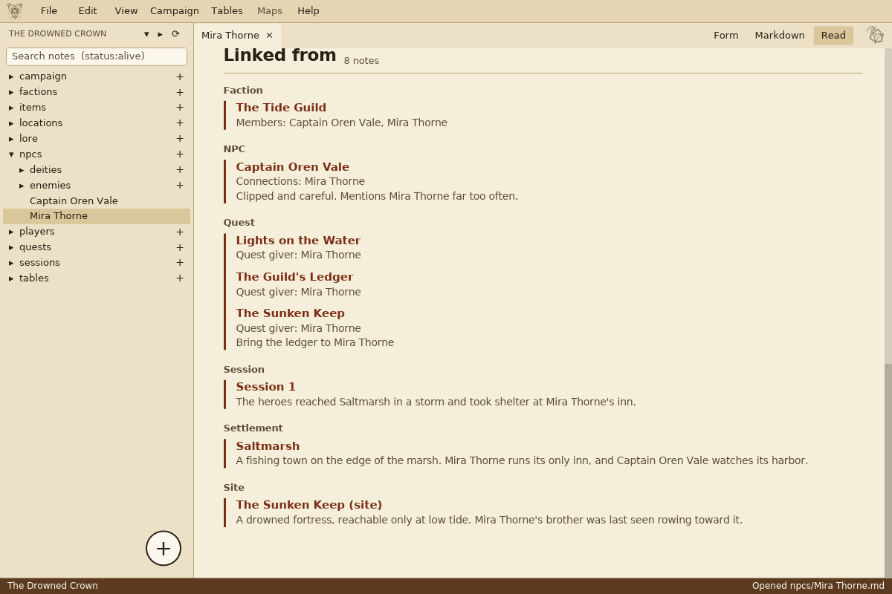
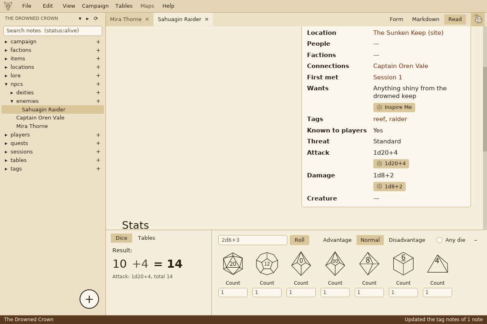
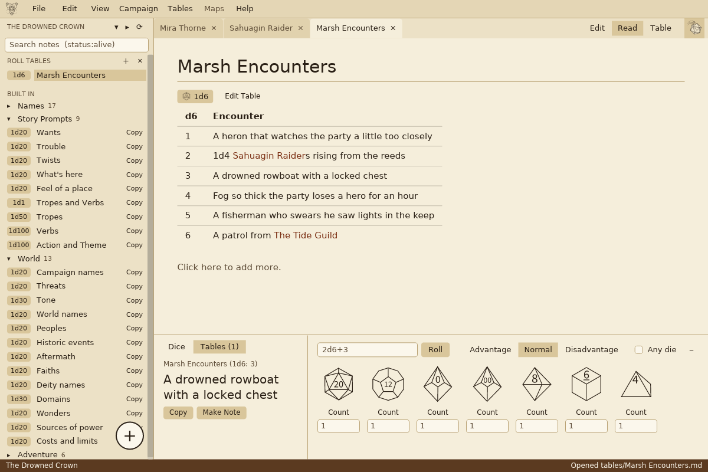
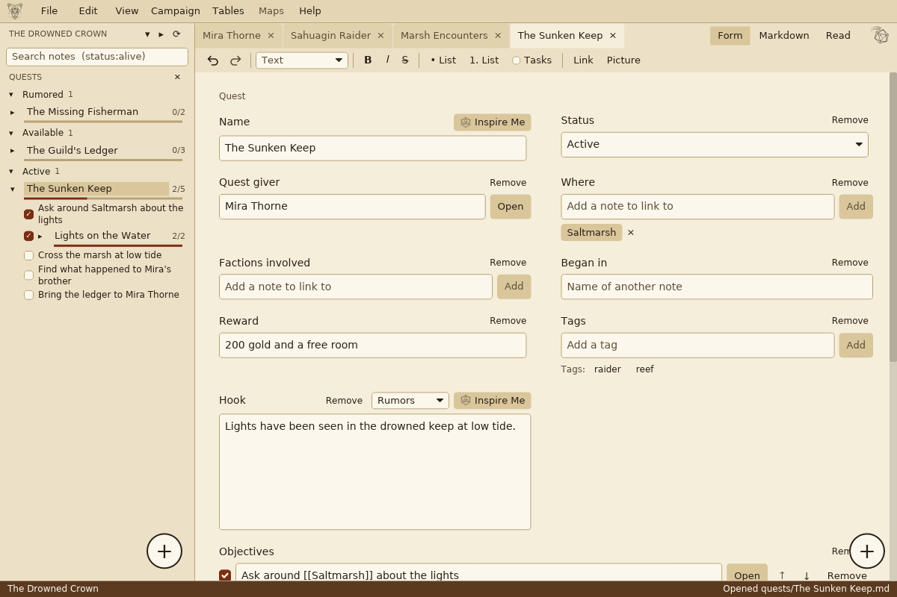
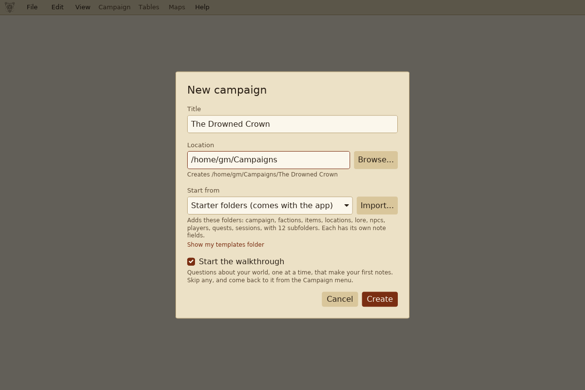

See it











Why Dungeon Elements?
Game Masters pour years into their campaigns. That work shouldn't be locked inside someone else's app or server.
Your files, on your drive
No account and no cloud. Your campaign is a folder on your computer, and you back it up however you like.
Nothing to lose if you leave
Every note is an ordinary text file that opens in any text editor, and in Obsidian too.
Any game system
Not tied to D&D or any other game. Use it for fantasy, sci-fi, horror, or solo play.
No code needed
Forms, buttons and menus do the work. You never have to learn Markdown or edit a settings file.
Free
Free to use and open source, under the MIT license.
What it does
Campaigns and notes
- Starter folders for your campaign, sessions, players, quests, NPCs, factions, places, lore and items.
- Each kind of note opens as a form with its own fields, and you can change those fields.
- A walkthrough that builds your world with you, one question at a time.
- Undo and Redo for your notes and your campaign, even a renamed or deleted note.
Links, like a wiki
- Link notes together as you type, and click a link to open it.
- Rename a note and every link to it follows.
- Find any note by name, by what it says, or by a field, like every NPC in one town.
Reading and writing
- A reading view that shows a note formatted, with pictures and tables.
- A formatting toolbar for headings, bold, lists and pictures.
- Light, Dark and High Contrast themes, or one of your own.
Dice and tables
- A dice roller for any die, with advantage and disadvantage.
- Roll tables you make with a table editor, or paste from a PDF.
- Built-in name generators and story prompts behind every Inspire Me button.
Quests
- Quests with steps to tick off, grouped by whether they're going, done or failed.
- Quest lines: a step can be a whole quest of its own.
More is coming: layouts you can arrange, maps, and a library for your PDF rulebooks. See the roadmap.
Dungeon Elements is not a virtual tabletop. It's for building and running your campaign, not for playing online.
Get started
There's no installer. Download the file for your computer from the download page, unzip it, and open the app.
Windows
Download the file ending in windows-x86_64.zip. Right-click it, choose Extract All, then double-click dungeon_elements.
The first time, Windows may say it "protected your PC". Click More info, then Run anyway.
Mac
Download the file ending in macos-universal.zip. Double-click it to unzip, then open Dungeon Elements. It works on Apple silicon and Intel Macs.
The first time, macOS may stop it from opening. Go to System Settings > Privacy & Security and click Open Anyway.
Linux
Download the file ending in linux-x86_64.tar.gz. Unpack it and run dungeon_elements.
The folder also has an icon and a desktop file, to add it to your app menu.
Your first campaign
- On the start screen, choose New Campaign..., give it a title, and pick where to save it.
- Leave Start the walkthrough ticked if you'd like help building your world, one question at a time.
- Click the + next to a folder to make a note there, like a new NPC, and fill in its fields.
- Type [[ in any note to link it to another one, and press Ctrl+S to save.
Press F1 in the app for short how-to guides on everything else.
Tell us what you think
Found a problem, or have an idea? Feedback of any kind is welcome.
Send feedback Report it on GitHub
The feedback form is a short Google Form, and you don't need an account. If you use GitHub, you can report problems and follow them there.